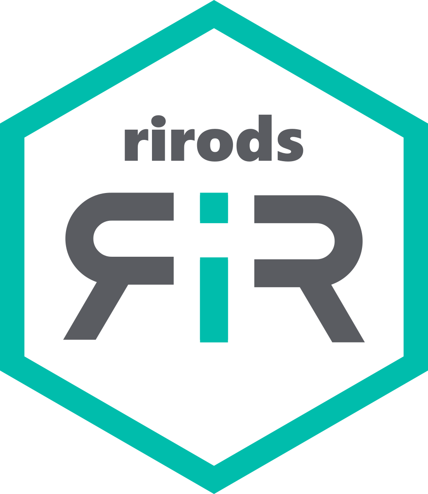

Accessing data locally and in iRODS
Mariana Montes
2026-07-19
Source:vignettes/local-irods.Rmd
local-irods.RmdIf you are not familiar with iRODS, understanding how to access and manipulate data with it may be less than intuitive. In this vignette, we’ll go through the main functions for setting and changing the working directory and for creating, saving, reading and removing data, comparing R functions for manipulation of local files and the rirods counterparts.
The main point to understand is that the iRODS server is not simply
another location that you can access by editing a path. While you can
use file.remove() to remove any file in your computer,
there is no path you can provide that will remove a data object in
iRODS. Instead, you need to use irm(), which connects to
the iRODS server to apply the same action. This is the sort of
comparison we will see in this vignette.
A second point to keep in mind is that, normally, you need to stage
and unstage your data in order to manipulate it, rather than modifying
your iRODS data directly. This is always the case with other clients,
such as iCommands: if you want to read a dataframe you have in iRODS,
you first need to copy it to your local computer and then open
that file; if you want to save a modified version of that file
you have to copy the local (modified) version back to iRODS.
rirods offers one exception to this by allowing to save R
objects in RDS format (only) directly into iRODS and read them back,
with isaveRDS() and ireadRDS()
respectively.
Finally, most of the functions in rirods are inspired
by iCommands, which are themselves modelled after Unix commands and
prefixed by an i. So, for example, the Unix command to
change a directory is cd,
its iCommands counterpart is icd, and then the
rirods equivalent is icd().
Set and change working directory
In R we can check the working directory with getwd() and
change it with setwd(dir), where dir is the
path we want to set as the new working directory. Both functions return
the current working directory; before the change and invisibly in the
case of setwd().
The rirods counterparts are ipwd()
(“print working directory”) and icd(dir) (“change
directory”) respectively.
For the purposes of this vignette, we’ll use a temporary directory
locally. This is the current output of getwd() and
ipwd() respectively:
We can see their contents with dir(path) or
list.files(path) and ils(path) respectively.
If path is not provided, the current working directory is
used as default:
We can focus on the “data” local directory with
setwd("data")1 and on the “data” iRODS collection with
icd("data"). Then the output of getwd() and
ipwd(), respectively, are updated, and dir()
and ils() will show the contents of “data” by default.
We can reset our working directories by providing the old path to
setwd() and icd() respectively. Note that
moving upwards in the file system is also possible by providing “../”
for each level up you want to go: icd("../") changes the
iRODS working directory to its parent collection.
Create directories
Directories can be created in R with dir.create(path);
collections can be created in iRODS with imkdir(path)
(“make directory”),
providing a path relative to the working directory. For example, the
code below creates an “analysis” directory under our working directory,
first locally and then in iRODS.
dir.create("analysis")
dir()
imkdir("analysis")
ils()Save data
R and several R packages (such as readr) provide a
number of functions to save data locally. For example,
writeLines(some_vector, path) can be used to write a vector
into a text file with one item per line;
write.csv(dataframe, path) can be used to write a dataframe
as a comma-separated file; saveRDS(R_object, path) can be
used to write any R object into an RDS file. This path can be relative
to the working directory or absolute paths.
For example, let’s simulate some data and store it in our “data”
directory with write.csv().
set.seed(1234)
fake_data <- data.frame(x = rnorm(20, mean = 1))
fake_data$y <- fake_data$x * 2 + 3 - rnorm(20, sd = 0.6)
write.csv(fake_data, file.path("data", "data.csv"), row.names = FALSE)
dir("data")When saving data in iRODS, we don’t have these kinds of options.
Instead, we can either transfer a file of any type from our local system
to iRODS with iput(local_path, irods_path) or save an R
object as an RDS file with
isaveRDS(some_object, irods_path). In the case of our
simulated data, we use the first option:
Note that the file name need not stay the same in the local and iRODS systems. Now, let’s say that we have processed our data with some linear regression modelling.
m <- lm(y ~ x, data = fake_data)
mWe could certainly store the output locally, but we could also decide to only store it in iRODS if we save it in RDS format. So let’s save it in the “analysis” collection.
Read data
Just like we have many different R functions to save files to
different formats, there are specific functions to read files in
different formats. And just like with rirods we either
save in RDS format or transfer files from a local system to iRODS, we
either read RDS files or transfer files back from iRODS to the local
system. If we want to read “data_from_local.csv”, we first need to
retrieve it with iget(irods_path, local_path) and then open
it with an appropriate R function.
iget("data/data_from_local.csv", "data/data_from_irods.csv")
dir("data")
read.csv("data/data_from_irods.csv") # same as fake_dataFor the RDS files, we could also use iget() if we wanted
to store them locally, or simply ireadRDS(irods_path) to
read the file directly.
Remove data
Finally, local data can be removed with unlink(path) or
file.remove(), whereas iRODS data can be
removed with irm(path).
Both unlink() and irm() take an optional
argument recursive that should be TRUE if we
want to remove a directory/collection and all its contents. In the case
of irm(), the force argument also defines
whether the item should be deleted permanently or, if
FALSE, sent to the “trash” collection.